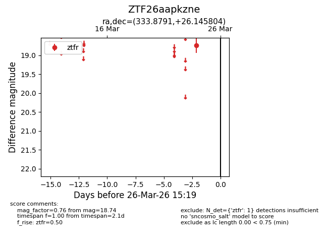
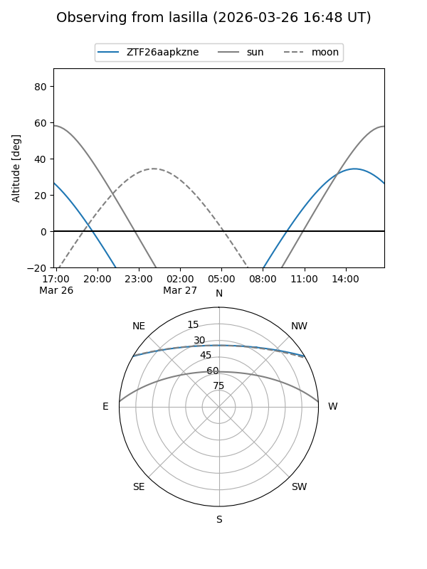
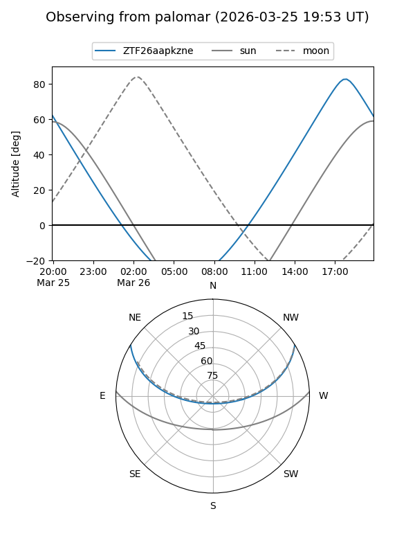

ZTF26aapkzne
Target ZTF26aapkzne at 2026-03-26 15:21
Aliases and brokers:
FINK: link
Lasair: link
ALeRCE: link
alt names
ZTF26aapkzne (ztf,fink_ztf)
Coordinates:
equatorial (ra, dec) = 333.8791,+26.14580
equatorial (HMS+DMS) = 22:15:31.00,+26:08:44.90
galactic (l, b) = (84.4502,-24.84204)
Flags:
Photometry:
last ztfr=18.74
1 ztfr detections
Lightcurve

Visibility


Additional plots